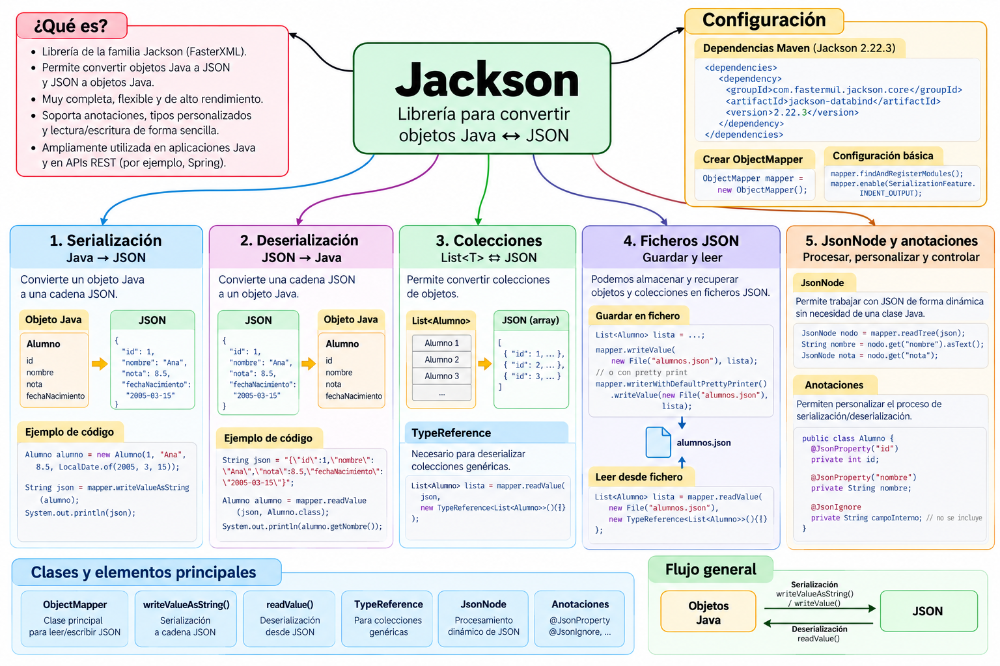

Jackson¶
Introducción¶
Jackson es una librería Java muy utilizada para trabajar con datos en formato JSON.
Al igual que Gson, permite convertir automáticamente objetos Java en JSON y realizar el proceso contrario.
La clase central que utilizaremos es:
ObjectMapper
Podemos representar el funcionamiento básico de Jackson así:
Objeto Java
│
│ serialización
▼
JSON
│
│ deserialización
▼
Objeto Java
Por ejemplo, partiendo de un objeto Java:
Alumno alumno =
new Alumno(
1,
"Ana",
8.5
);
Jackson puede generar un documento JSON equivalente:
{
"id": 1,
"nombreCompleto": "Ana",
"nota": 8.5
}
También podemos realizar el proceso contrario y recuperar un objeto Java a partir de un JSON.
Mapa conceptual de Jackson¶

¿Por qué estudiamos Jackson?¶
En este bloque hemos utilizado diferentes formas de trabajar con JSON desde Java.
Primero utilizamos org.json, donde manipulamos directamente la estructura JSON:
JSONObject alumno = new JSONObject();
alumno.put("id", 1);
alumno.put("nombre", "Ana");
alumno.put("nota", 8.5);
Después utilizamos Gson, que permite convertir directamente objetos Java:
String json =
gson.toJson(alumno);
Jackson sigue una filosofía similar, pero utiliza como elemento central:
ObjectMapper
Por ejemplo:
String json =
mapper.writeValueAsString(alumno);
Podemos resumir las tres aproximaciones:
org.json
│
▼
Manipulación explícita
de la estructura JSON
Gson
│
▼
Objetos Java ⇄ JSON
mediante Gson
Jackson
│
▼
Objetos Java ⇄ JSON
mediante ObjectMapper
Estudiar las tres librerías nos permitirá reconocer diferentes formas de resolver el mismo problema.
Conceptos fundamentales¶
Serialización¶
La serialización consiste en convertir un objeto Java en una representación JSON.
JAVA ─────────────► JSON
Con Jackson utilizaremos principalmente:
writeValueAsString()
Por ejemplo:
String json =
mapper.writeValueAsString(alumno);
Deserialización¶
La deserialización realiza el proceso contrario:
JAVA ◄───────────── JSON
Con Jackson utilizaremos principalmente:
readValue()
Por ejemplo:
Alumno alumno =
mapper.readValue(
json,
Alumno.class
);
Important
Dos operaciones fundamentales que debemos recordar son:
```text writeValueAsString() Java → JSON
readValue() JSON → Java ```
ObjectMapper¶
La clase que utilizaremos continuamente al trabajar con Jackson es:
ObjectMapper
Para crearla:
ObjectMapper mapper =
new ObjectMapper();
A partir de este objeto podremos realizar las principales operaciones de serialización y deserialización.
Por ejemplo:
mapper.writeValueAsString(alumno);
o:
mapper.readValue(
json,
Alumno.class
);
Podemos visualizarlo así:
ObjectMapper
/ \
/ \
▼ ▼
Objeto Java JSON
│ │
└────── ⇄ ───────┘
Clases y elementos principales¶
Durante este minicurso utilizaremos principalmente:
| Clase / método | Función |
|---|---|
ObjectMapper |
Clase principal para trabajar con JSON |
writeValueAsString() |
Convierte un objeto Java en una cadena JSON |
readValue() |
Convierte JSON en objetos Java |
writeValue() |
Escribe directamente datos JSON en un fichero |
TypeReference |
Permite describir tipos genéricos como List<Alumno> |
JsonNode |
Permite trabajar con JSON como un árbol de nodos |
readTree() |
Convierte un JSON en un árbol JsonNode |
@JsonProperty |
Permite modificar el nombre utilizado en JSON |
@JsonIgnore |
Permite excluir una propiedad del JSON |
Trabajar con nuestros modelos Java¶
Jackson puede trabajar directamente con las clases de nuestra aplicación.
Por ejemplo:
public class Alumno {
private int id;
private String nombre;
private double nota;
public Alumno() {
}
// constructores
// getters
// setters
}
Jackson puede relacionar las propiedades del objeto con las propiedades del JSON.
Conceptualmente:
JAVA JSON
id ◄────────► "id"
nombre ◄────────► "nombre"
nota ◄────────► "nota"
Esto permite trabajar normalmente con nuestros objetos Java y utilizar Jackson cuando necesitamos convertirlos a JSON.
Colecciones¶
Jackson también permite serializar colecciones.
Por ejemplo:
List<Alumno>
puede convertirse en:
[
{
"id": 1,
"nombreCompleto": "Ana",
"nota": 8.5
},
{
"id": 2,
"nombreCompleto": "Luis",
"nota": 7.2
}
]
La serialización es sencilla:
String json =
mapper.writeValueAsString(alumnos);
TypeReference¶
Al deserializar colecciones necesitamos conservar información sobre el tipo de los elementos.
Por ejemplo:
List<Alumno>
Para ello Jackson proporciona:
TypeReference
Podemos escribir:
List<Alumno> alumnos =
mapper.readValue(
json,
new TypeReference<List<Alumno>>() {}
);
Note
TypeReference cumple en Jackson una función parecida a la que realizaba TypeToken cuando trabajábamos con Gson.
Podemos comparar:
Gson Jackson
TypeToken TypeReference
│ │
▼ ▼
List<Alumno> List<Alumno>
Trabajar con ficheros¶
Jackson puede leer y escribir directamente ficheros JSON.
Para guardar:
mapper.writeValue(
fichero.toFile(),
alumnos
);
El flujo será:
List<Alumno>
│
▼
ObjectMapper
│
▼
writeValue()
│
▼
alumnos.json
Para leer:
List<Alumno> alumnos =
mapper.readValue(
fichero.toFile(),
new TypeReference<List<Alumno>>() {}
);
El proceso completo será:
OBJETOS JAVA
│
▼
ObjectMapper
│
▼
FICHERO JSON
│
▼
ObjectMapper
│
▼
OBJETOS JAVA
JsonNode¶
Jackson también permite trabajar directamente con la estructura de un JSON sin convertirlo inmediatamente en una clase Java.
Para ello utilizaremos:
JsonNode
Por ejemplo:
JsonNode raiz =
mapper.readTree(json);
Después podemos consultar propiedades:
raiz.get("nombreCompleto").asText();
o:
raiz.get("nota").asDouble();
Conceptualmente:
JSON
│
│ readTree()
▼
JsonNode
│
├── get("id")
├── get("nombreCompleto")
└── get("nota")
Esta forma de trabajar recuerda en parte a la manipulación directa que realizábamos con JSONObject.
Anotaciones¶
Jackson permite personalizar la conversión mediante anotaciones.
En este minicurso veremos dos ejemplos.
@JsonProperty¶
Permite indicar el nombre que tendrá una propiedad en el JSON.
Por ejemplo:
@JsonProperty("nombreCompleto")
public String getNombre() {
return nombre;
}
La propiedad Java:
nombre
puede aparecer en JSON como:
"nombreCompleto"
@JsonIgnore¶
Permite indicar que una propiedad no debe aparecer en el JSON.
Por ejemplo:
@JsonIgnore
private String observaciones;
Aunque el objeto Java tenga:
observaciones
Jackson no incluirá esa información en el JSON.
Mapa del minicurso¶
El recorrido que seguiremos será:
JACKSON
│
▼
1. PREPARACIÓN
│
▼
Maven + ObjectMapper
│
▼
2. SERIALIZACIÓN
│
▼
Java → JSON
│
▼
3. DESERIALIZACIÓN
│
▼
JSON → Java
│
▼
4. COLECCIONES
│
▼
List<Alumno> + TypeReference
│
▼
5. FICHEROS
│
┌──────────┴──────────┐
▼ ▼
GUARDAR LEER
│ │
└──────────┬──────────┘
▼
alumnos.json
│
▼
6. JSONNODE Y ANOTACIONES
│
┌─────────┴─────────┐
▼ ▼
JsonNode @JsonProperty
@JsonIgnore
│
▼
7. RESUMEN
Objetivos del minicurso¶
Al finalizar este bloque deberías ser capaz de:
- configurar Jackson en un proyecto Maven;
- utilizar
ObjectMapper; - comprender la diferencia entre serialización y deserialización;
- convertir objetos Java a JSON;
- convertir JSON en objetos Java;
- trabajar con colecciones;
- utilizar
TypeReferencepara tipos genéricos; - guardar objetos y colecciones en ficheros JSON;
- recuperar objetos desde ficheros JSON;
- trabajar con la estructura de un JSON mediante
JsonNode; - utilizar
readTree(); - personalizar propiedades mediante anotaciones;
- comprender el uso básico de
@JsonProperty; - comprender el uso básico de
@JsonIgnore; - comparar las formas de trabajo de
org.json, Gson y Jackson.
Proyecto de ejemplos¶
Todos los ejemplos del minicurso están incluidos en un único proyecto Maven, preparado para:
Java 21
+
Maven
+
Jackson
📦 Descargar proyecto Maven completo de Jackson
El proyecto contiene:
jackson-ejemplos/
│
├── pom.xml
├── README.md
│
├── data/
│ └── alumnos.json
│
└── src/main/java/com/example/
├── Alumno.java
├── DemoJackson.java
├── DemoListaJackson.java
├── GuardarAlumnosJackson.java
├── LeerAlumnosJackson.java
├── DemoJsonNode.java
└── DemoAnotaciones.java
Ejemplos incluidos¶
| Fichero | Contenido |
|---|---|
Alumno.java |
Modelo utilizado en los ejemplos |
DemoJackson.java |
Serialización y deserialización de un objeto |
DemoListaJackson.java |
Colecciones y TypeReference |
GuardarAlumnosJackson.java |
Guarda una colección en data/alumnos.json |
LeerAlumnosJackson.java |
Recupera una colección desde data/alumnos.json |
DemoJsonNode.java |
Lectura del JSON mediante el modelo de árbol JsonNode |
DemoAnotaciones.java |
Uso de @JsonProperty y @JsonIgnore |
Proyecto descargable
Descarga y descomprime el proyecto para abrirlo directamente desde VS Code.
El pom.xml está configurado para utilizar Java 21 y ya incluye la dependencia necesaria de Jackson.
Orden recomendado de los ejemplos¶
Podemos seguir este recorrido:
DemoJackson.java
│
▼
Objeto Java ⇄ JSON
│
▼
DemoListaJackson.java
│
▼
List<Alumno> ⇄ JSON
│
▼
GuardarAlumnosJackson.java
│
▼
data/alumnos.json
│
▼
LeerAlumnosJackson.java
│
▼
List<Alumno>
│
▼
DemoJsonNode.java
│
▼
JSON → árbol de nodos
│
▼
DemoAnotaciones.java
│
▼
Personalización del JSON
Contenidos del minicurso¶
1. Preparación del proyecto¶
Configuraremos un proyecto Maven para trabajar con:
Java 21
+
Jackson
y conoceremos la clase:
ObjectMapper
2. Serialización¶
Aprenderemos a realizar:
Objeto Java
│
│ writeValueAsString()
▼
JSON
3. Deserialización¶
Realizaremos el proceso contrario:
JSON
│
│ readValue()
▼
Objeto Java
4. Colecciones y TypeReference¶
Trabajaremos con:
List<Alumno>
y aprenderemos por qué necesitamos:
TypeReference
para recuperar correctamente colecciones genéricas.
5. Ficheros JSON¶
Completaremos el ciclo de persistencia:
List<Alumno>
│
▼
alumnos.json
│
▼
List<Alumno>
utilizando directamente ObjectMapper.
6. JsonNode y anotaciones¶
Veremos dos características especialmente interesantes de Jackson.
Por una parte:
JsonNode
para trabajar directamente con la estructura del JSON.
Por otra:
@JsonProperty
@JsonIgnore
para personalizar la conversión entre Java y JSON.
7. Resumen¶
Terminaremos con una página de referencia rápida que reúne:
ObjectMapper;writeValueAsString();readValue();writeValue();TypeReference;- ficheros;
JsonNode;readTree();- anotaciones;
- comparación con Gson y
org.json; - recorrido completo de los ejemplos.
Objetivo final
Al terminar este minicurso tendremos tres formas diferentes de trabajar con JSON desde Java:
```text org.json │ └── Manipulación explícita del JSON
Gson │ └── Objetos Java ⇄ JSON
Jackson │ └── ObjectMapper │ ├── Objetos Java ⇄ JSON ├── Colecciones ├── Ficheros ├── JsonNode └── Anotaciones ```
Esto nos permitirá comprender no solo cómo utilizar Jackson, sino también las diferencias entre las distintas alternativas que hemos estudiado para trabajar con JSON desde Java.